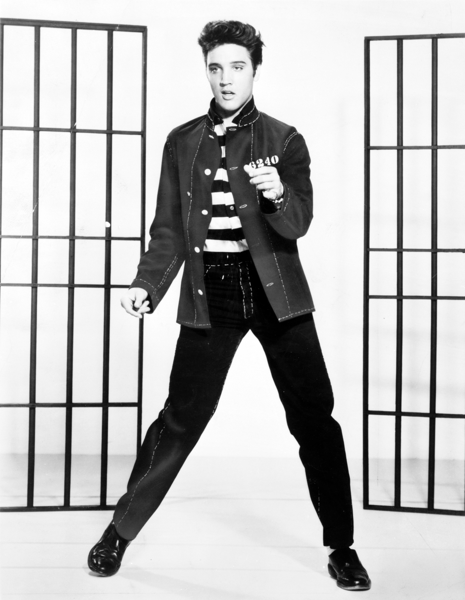

Rock & roll
Rock & roll je hudební žánr, který vznikl v 50. letech 20. století v USA. Spojuje prvky blues, country a rhythm and blues, charakterizuje ho energický rytmus a jednoduché melodie. Mezi ikony rock & rollu patří Elvis Presley, Chuck Berry nebo Little Richard. Tento styl hudby měl obrovský vliv na vývoj moderní populární hudby.
Informace
- vzniká v 50. letech 20. století 
- nástroje - elektricky zesílené kytary a baskytary, klávesy, bicí...
- nejslavnější - Elvis Presley
- označován jako "král Rock & Rollu"
- narodil se 8. ledna 1935 Tupelo, Mississippi
- umřel 16. srpna 1977 Memphis, Tennessee
- skloubil spirituály, blues a country do jednoho
- hudební styl si našel i obdivovatele ve Velké Británii - Beatles
- hráli: John Lennon, Paul McCartney, George Harrison, Ringo Starr
- anglická rocková skupina
- nejprodávanější kapela v historii (podle RIAA)
- do roku 1985 prodali přes miliardu desek a kazet po celém světě